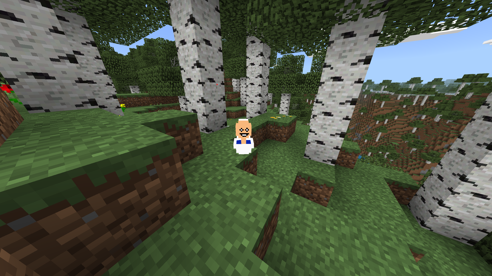
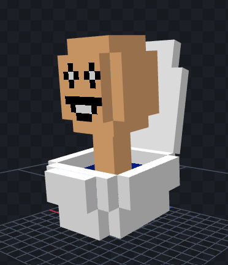
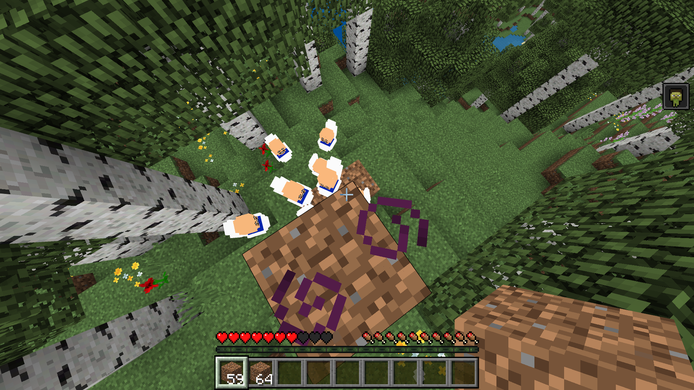
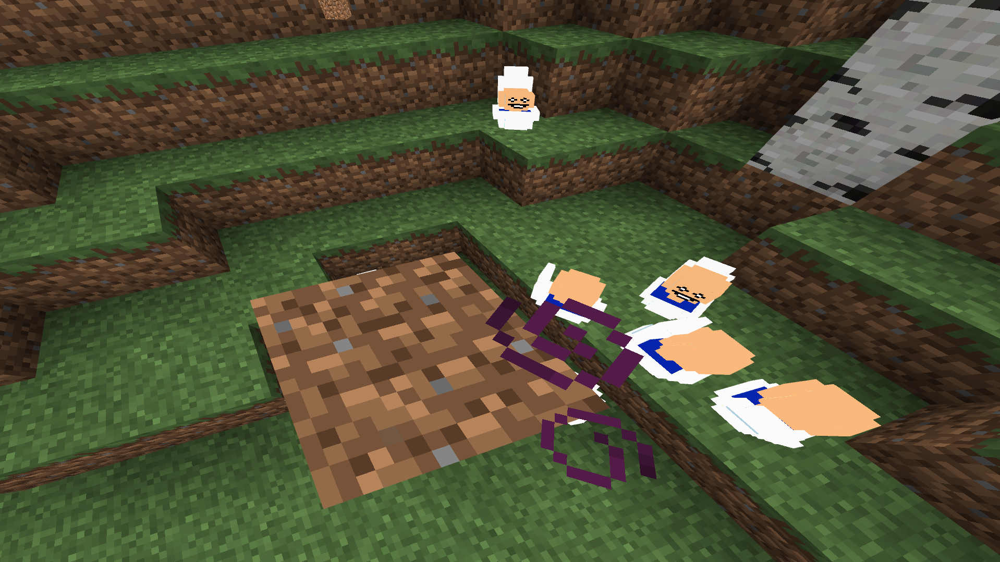
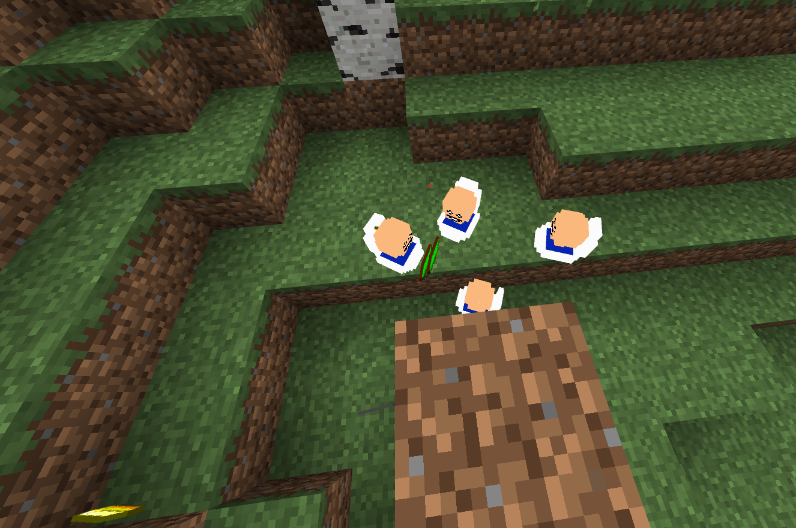
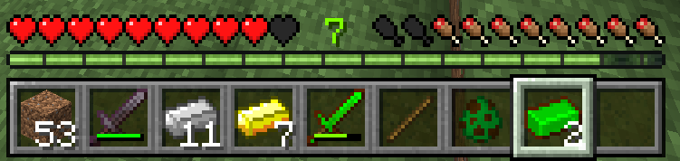
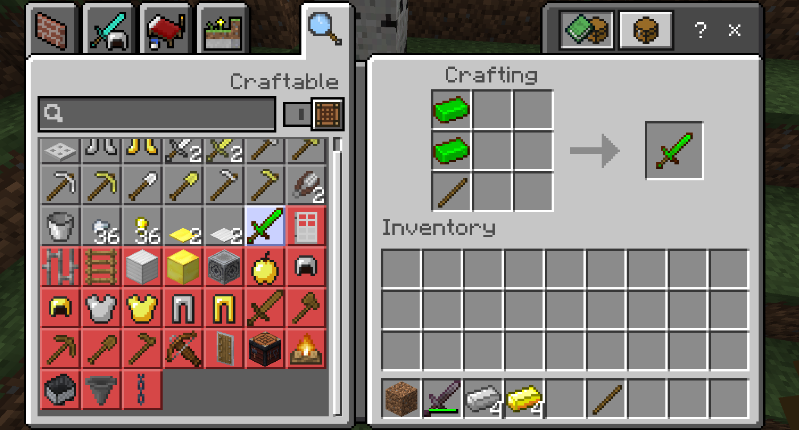
Skibidi Toilet Add-on
Um add-on criado primeiramente no Minecraft Bedrock Edition, mas agora também disponível para Java.
Possui entidades e itens personalizados, que possibilita a criação de ferramentas a partir do Toilet
Ingot, o minério do Skibidi Toilet.
Bedrock
Java
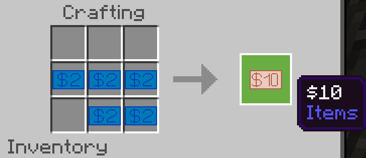
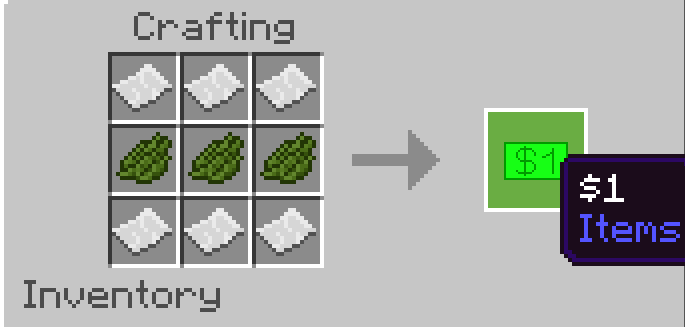
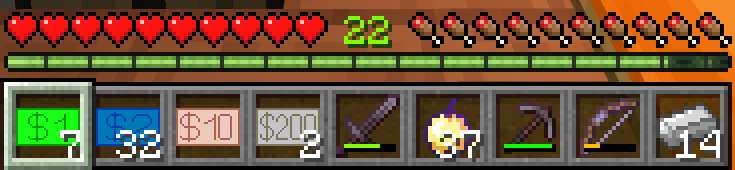
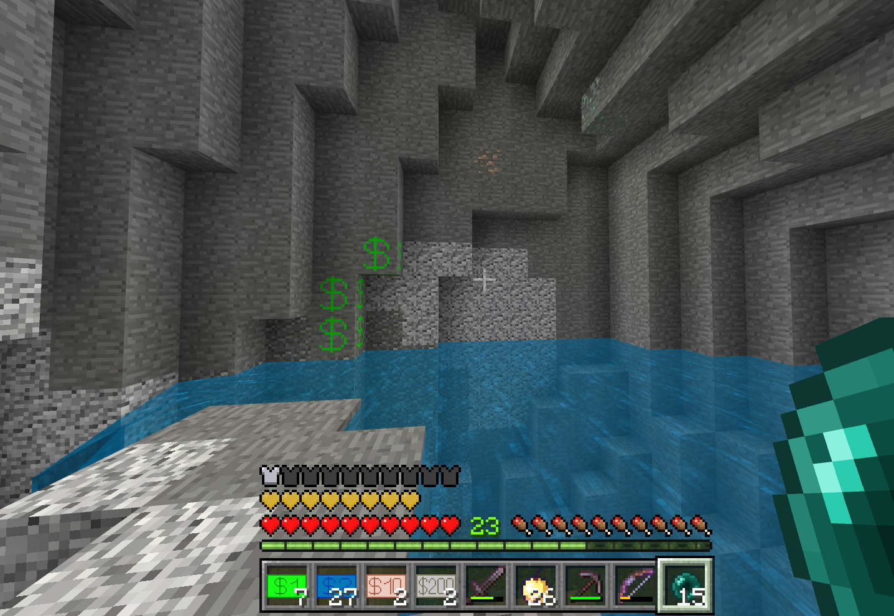
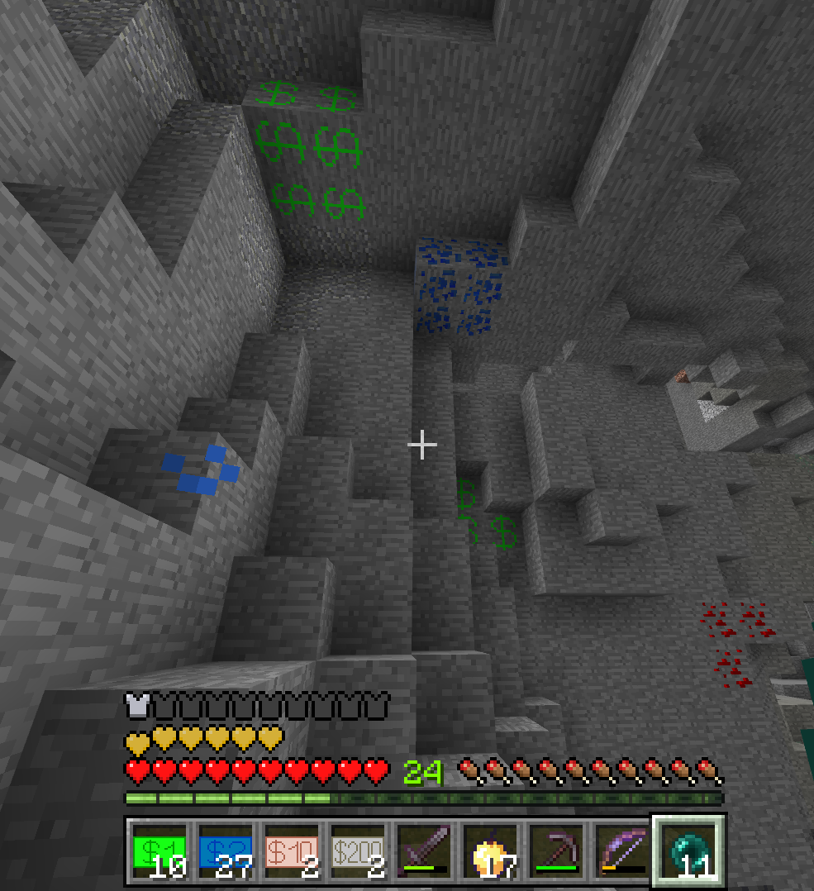
Money+ Add-on
Um add-on que adiciona notas, para compras entre players, e também villagers. Na última atualização, foi
adicionado o minério de dinheiro, que é gerado naturalmente no mundo, e é muito abundante.
Bedrock
Java